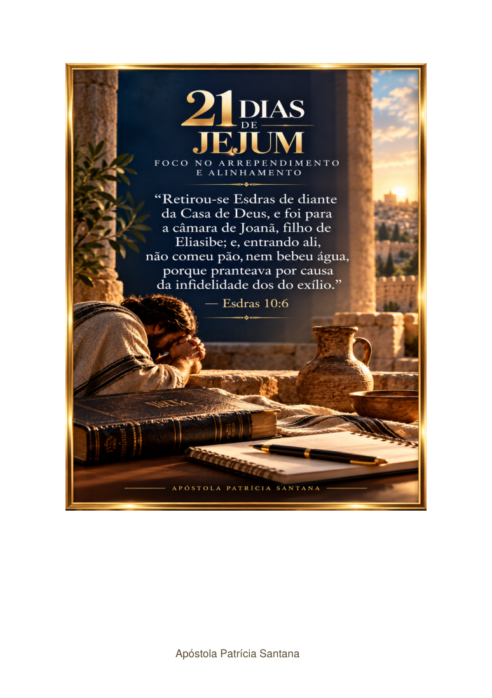

GRATUITO · DISPONÍVELUMA JORNADA DE FÉ E REFLEXÃO
21 Dias de Jejum
Foco no Arrependimento e Alinhamento. Reserve um momento para a Palavra, a oração e o exame pessoal. Avance em cada página no seu próprio ritmo e retome a leitura quando desejar.
📖 Leitura interativa✦ 7 páginas♡ Acesso gratuito